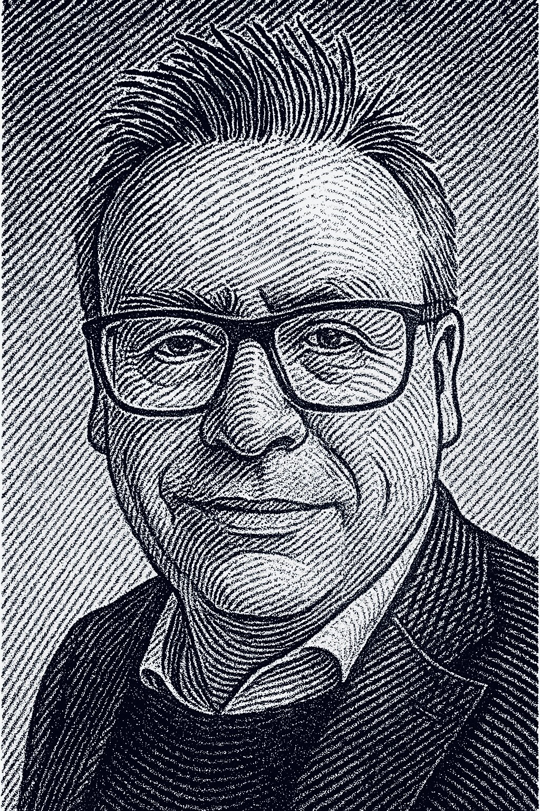

At its core, Kierkegaard embodies this principle through restraint and refinement. The design balances the organic flow of broad-nib calligraphy with the structural clarity of modern typography. Each letterform is carefully modeled with subtly curved stems, allowing the font to convey warmth and humanity within a rational, typographic framework. The result is a typeface that feels both timeless and alive — rooted in the heritage of Renaissance serifs yet adaptable for contemporary design needs. From editorial layouts to branding, long-form text, and digital interfaces, Kierkegaard lends a thoughtful and intellectual tone without losing approachability.
Kierkegaard’s anatomy reflects a dialogue between philosophy and form. The slightly curved stems interpret the motion of natural handwriting, suggesting the trace of a broad nib. This approach creates a dynamic rhythm across lines of text, offering an elegant reading experience. The complete family contains 20 members in five weights, each paired with a matching italic. Additional features include old-style figures, small capitals, and refined character detailing for professional typographic versatility.